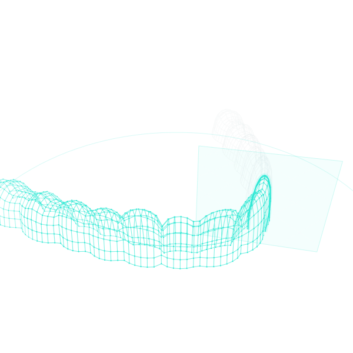

Night guard
Upper · Lower
- What it is
- An occlusal guard covering the upper or lower arch.
- Who it is for
- Patients whose dentist recommends an occlusal guard.
- Why digital
- Designed on the patient's own scan, so the fit is engineered to that arch.

Digital dental laboratory · Custom oral appliances
Maskatech Labs is a digital dental laboratory. Your practice sends an intraoral scan. We return a precision-fabricated appliance, digitally designed for the individual case.
One digital thread runs through every case, from the scan your practice takes to the appliance delivered back for the delivery appointment.
The practice takes an intraoral scan of the patient and sends the case. The scan is the case.
The appliance is digitally designed on that scan, for the individual case.
Precision-fabricated from the design. Digitally exact.
Hand-finished. Every case is inspected before it leaves the lab.
The finished appliance is delivered back to the practice for the scheduled delivery appointment.
Each appliance is designed on the patient's own scan and built for that case. Nothing is generic.
Upper · Lower
Per arch
Additional appliances by request — ask us about your case. Ask about a case
Four principles behind every case.
Every appliance is designed on the patient's own scan and built to that geometry.
Each appliance is designed for the individual case.
Every case is inspected before it leaves the lab.
We adopt new digital tooling as it proves itself.
Scan the patient, send the case, and schedule the delivery appointment. We handle the rest.
Take an intraoral scan in your practice.
Appliance, arch and any notes for the design.
We fabricate the appliance and deliver it back to your practice for the scheduled delivery appointment.
Maskatech Labs fabricates appliances for The Teeth Boutique in Chicago.
General + Cosmetic Dentistry
Send the case details below. The form opens a prefilled email in your mail app. Nothing is stored on this site.
Or write directly
cases@maskatech.com